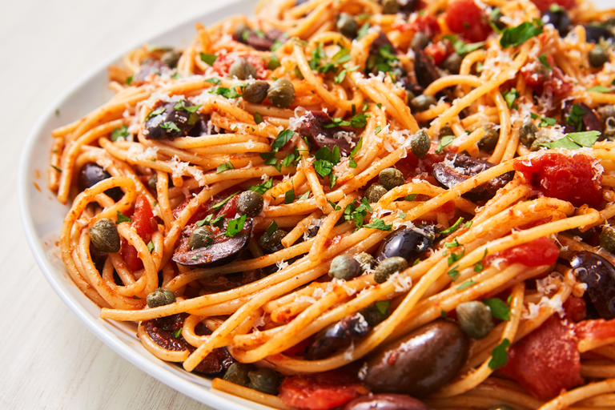

Pasta Puttanesca Recipe

Description:
Pasta puttanesca might have a slightly scandalous history, but we love it
all the same. With an extremely fragrant sauce, this pasta is to die for.
Bursting with flavor and so easy to prepare, you'll be craving this pasta
every week. The super-fragrant sauce is made with a lot of garlic and
anchovies that will have you addicted right away, and the capers and
olives add a briny saltiness to the dish. It's definitely a break from the
classic spaghetti and meatballs that feels a little more complicated even
though it isn't. Serve it with the best garlic bread ever and call it a
day.
Ingridietns:
- 1/4 c. extra-virgin olive oil
- 4 cloves garlic, smashed
- 4 anchovy fillets, chopped
- 1 (28-oz.) can diced tomatoes
- 1/2 c. kalamata olivies, pitted
- 1/4 c. capers
- 1/2 tsp. crushed red pepper flakes
- Kosher salt
- 1 lb. spaghetti
- Freshly grated Parmesan, for serving
Steps:
-
In a large skillet over medium heat, heat oil. Add garlic and cook until
fragrant, 1 minute. Add anchovies and cook until fragrant, 1 minute
more. Add tomatoes, olives, capers, and red pepper flakes. Bring to a
boil, then reduce heat and let simmer, 15 minutes.
-
Meanwhile, in a large pot of boiling salted water, cook pasta until al
dente according to package directions. Drain and add sauce, tossing
until coated. Sprinkle with Parmesan.